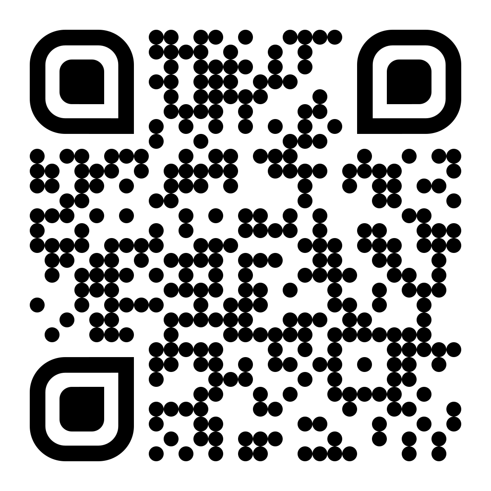

ইনপুট, আউটপুট ও ইনপুট-আউটপুট ডিভাইস, কী-বোর্ড, মাউস, ডিজিটাইজার, স্ক্যানার, OMR, OCR, MICR এবং বিগত বিসিএস ও নিয়োগ পরীক্ষার পূর্ণাঙ্গ মাস্টার নোট ও প্রশ্নব্যাংক

ডিভাইস চিত্র প্রিভিউ • বাইরে ক্লিক করুন অথবা ESC চাপুন